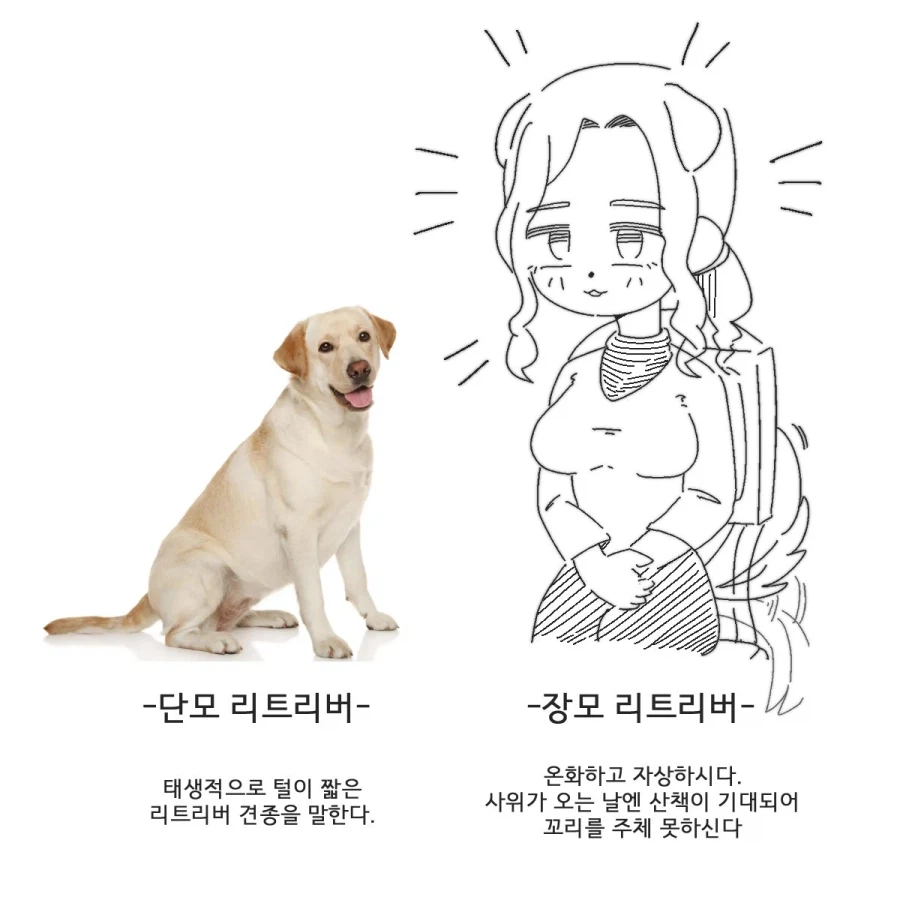
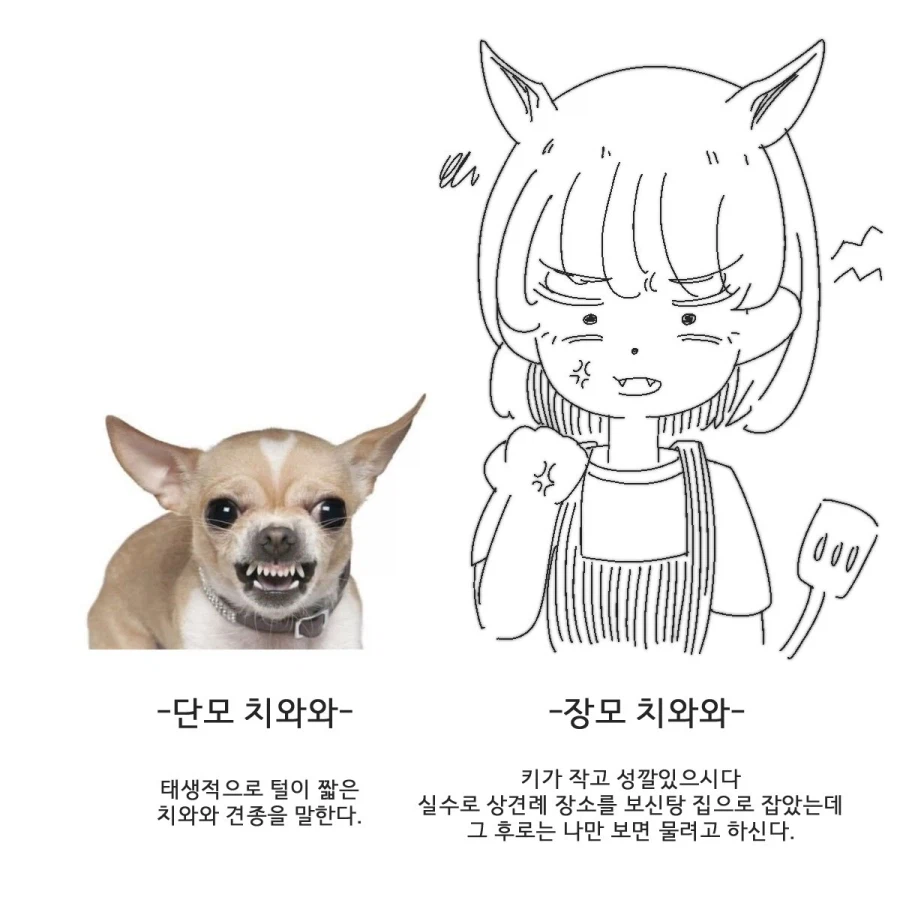
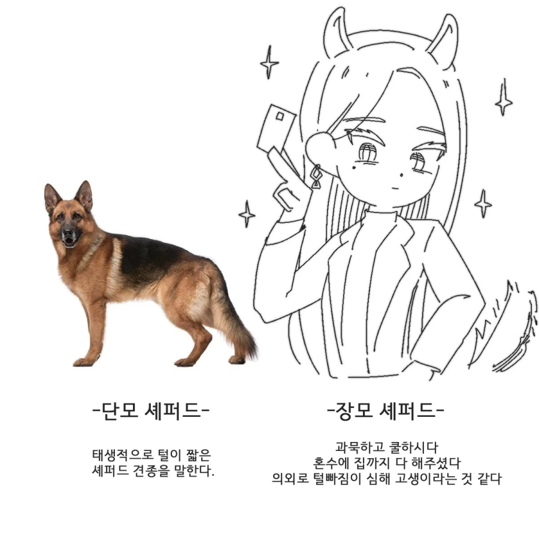
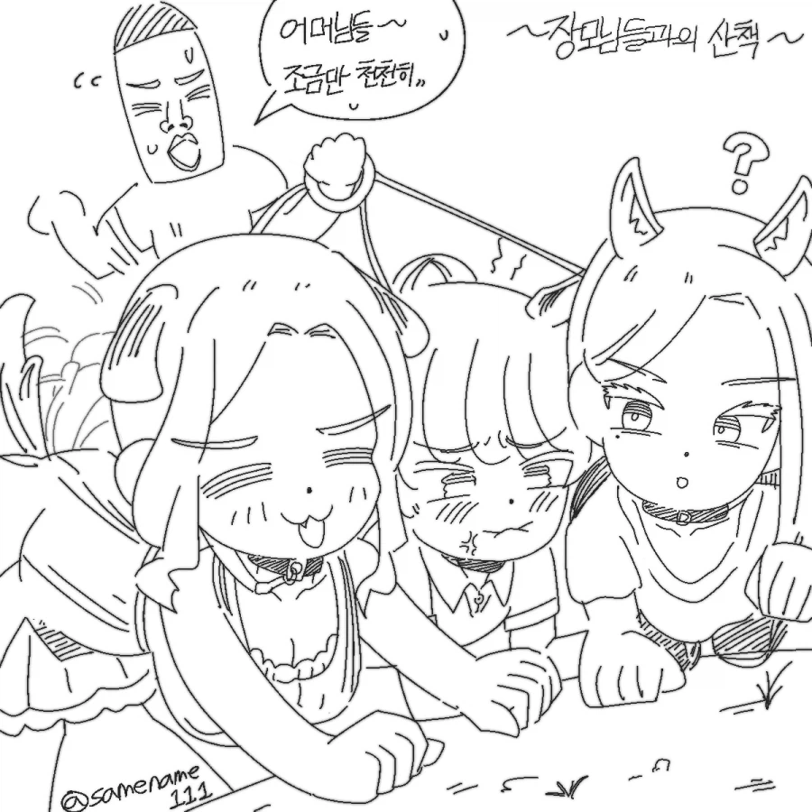
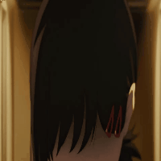

어흐




어흐
장모가 3명...? 개판이네
어흐.. 어.. 흠..


아 그 장모
장모님을 임신시켰다의 그 장모인줄
아아니 전부 빗치였냐고 ㅋㅋㅋ
이런거 만드는 놈들 머릿속엔 뭐가 들었을까
들었겠냐



저분들이 장모님이려면 그... 아내분이...
장모님이 치와와인데 상견례 식당을 보신탕집으로 잡는 개호로잡놈의새끼가 어딨냐
장모님"들"? 도대체 무슨 폴리 아모리를 하시는 겁니까 선생님
아 전부 한 명의 장모였구나?
박완규와 강형욱의 차이